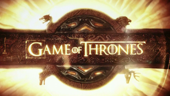

games of thrones
Game of Thrones is an American fantasy drama television series created by David Benioff and D. B. Weiss for HBO. It is an adaptation of A Song of Ice and Fire, a series of high fantasy novels by George R. R. Martin, the first of which is A Game of Thrones. The show premiered on HBO in the United States on April 17, 2011, and concluded on May 19, 2019, with 73 episodes broadcast over eight seasons.
Set on the fictional continents of Westeros and Essos, Game of Thrones has a large ensemble cast and follows several story arcs throughout the course of the show. The first major arc concerns the Iron Throne of the Seven Kingdoms of Westeros through a web of political conflicts among the noble families either vying to claim the throne or fighting for independence. The second major arc focuses on the last descendant of the realm's deposed ruling dynasty, who has been exiled to Essos and is plotting to return and reclaim the throne. The third follows the Night's Watch, a military order defending the realm against threats from beyond the Seven Kingdoms' northern border.

Game of Thrones attracted a record viewership on HBO and has a broad, active, and international fan base. Many critics and publications have named the show one of the greatest television series of all time. Critics have praised the series for its acting, complex characters, story, scope, and production values, although its frequent use of nudity and violence (including sexual violence) generated controversy. The final season received significant criticism for its reduced length and creative decisions, with many considering it a disappointing conclusion. The series received 59 Primetime Emmy Awards, the most by a drama series, including Outstanding Drama Series in 2015, 2016, 2018 and 2019. Its other awards and nominations include three Hugo Awards for Best Dramatic Presentation, a Peabody Award, and five nominations for the Golden Globe Award for Best Television Series – Drama.
A prequel series, House of the Dragon, premiered on HBO in 2022. A second prequel currently in production, A Knight of the Seven Kingdoms, is scheduled to debut in 2026.
Game of Thrones has an ensemble cast which has been estimated to be the largest on television.[9] In 2014, several actors' contracts were renegotiated to include a seventh-season option.[10] By the final season, five of the main cast members made $1 million per episode, making them among the highest paid television performers.[11][12]
Eddard "Ned" Stark (Sean Bean) is the head of House Stark. His children with his wife, Catelyn (Michelle Fairley), include: Robb (Richard Madden), Sansa (Sophie Turner), Arya (Maisie Williams) and Bran (Isaac Hempstead-Wright). Ned also has an illegitimate son, Jon Snow (Kit Harington), who, along with his scholarly friend, Samwell Tarly (John Bradley) serve in the Night's Watch under Lord Commander Jeor Mormont (James Cosmo). The Wildlings living north of the Wall include Gilly (Hannah Murray) and the warriors Tormund Giantsbane (Kristofer Hivju) and Ygritte (Rose Leslie).[13]

Others associated with House Stark include Ned's ward Theon Greyjoy (Alfie Allen), Ned's vassal Roose Bolton (Michael McElhatton), and Roose's illegitimate son, Ramsay Snow (Iwan Rheon). Robb accepts help from the healer Talisa Maegyr (Oona Chaplin), while elsewhere, Arya befriends blacksmith's apprentice Gendry (Joe Dempsie) and assassin Jaqen H'ghar (Tom Wlaschiha). In the Stormlands, the tall warrior Brienne of Tarth (Gwendoline Christie) is introduced to Catelyn.
In King's Landing, Ned's best friend, King Robert I Baratheon (Mark Addy), shares a loveless political marriage with Cersei Lannister (Lena Headey). Her younger twin brother, Ser Jaime (Nikolaj Coster-Waldau), serves on the Kingsguard while their younger brother Tyrion (Peter Dinklage) is attended by his mistress Shae (Sibel Kekilli) and mercenary Bronn (Jerome Flynn). Cersei's father is Tywin (Charles Dance), head of House Lannister and the richest man in Westeros. Cersei has two sons: Joffrey (Jack Gleeson) and Tommen (Dean-Charles Chapman). Joffrey is guarded by the scar-faced warrior Sandor "The Hound" Clegane (Rory McCann).[14]